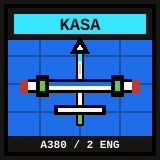

STANDARD WIDEBODY
Kasa A380

Agile twin-engine handling with a standard cruise envelope. A good first airframe for learning traffic patterns and short-field technique.
- Engines2 independent
- Cruise / max140 / 172 kt
- Rotate / stall124 / 98 kt
- Fuel capacity100% · about 4 hours
- Turbulence responseStandard